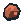

Active jobs finish safely. Reclaim leftover inputs to clear a recipe mismatch.
World seed:
Resource textures from Modernity-GTNH.
METALLIC templates adapted with material tints. Current pack license: CC BY-NC-SA 4.0. Upstream GregTech: Refreshed MIT notice preserved.
This replaces your current factory and restores starting resources. Background-grid settings are preserved.
1 Miner · 2 Conveyor · 3 Smelter · 4 Underground · 5 Junction · 6 Splitter · 7 Router · 8 Demolish · 9 Bender · 0 Wire Mill · L Lathe · F Ammo Factory · T Turret. Click to place; drag to lay belts. R rotates. Right-click / Escape cancels. WASD / arrows pan. Scroll zooms. Middle-drag or no-tool drag pans. Space pauses.
Click any existing building to inspect. Processing machines have recipe buttons with input/output icons. Recipe changes retain all resources; active jobs finish their original recipe. Use Reclaim stored inputs to return unused inputs to inventory when switching material.
Underground endpoints need empty surface tiles. Choose an exit 2–6 tiles ahead, facing the same direction. Connections pass beneath buildings, roads and other tunnels without interacting. Removing one endpoint disconnects its partner; rebuild the pair to reconnect it.
Junctions cross straight lines and cannot connect directly to other Junctions. Alternating Router/Junction lines transfer atomically within one tick; Router-only chains advance normally. Splitters accept from behind and alternate left/right. Routers distribute automatically among available outputs, excluding the input side; no configuration is needed. Buildings feed compatible adjacent machines directly at their output arrows.
Combat: enable Enemy Spawning in settings and use Locate northern spawner. Ammo Factories consume 2 iron plates + 1 coal for 5 rounds. Deliver ammo physically to turrets; creative mode only makes construction free. Turrets fire within 8 tiles. Existing enemies keep attacking when spawning is disabled; Clear Enemies removes them.
The truck departs with 50 items; dispatch smaller loads from depot inspection. Delivered cargo enters inventory after leaving the map. Starter plates and wires let you build the first processing machines. Demolition gives no refund. Grid and Creative Mode preferences persist; reloading starts a new factory.